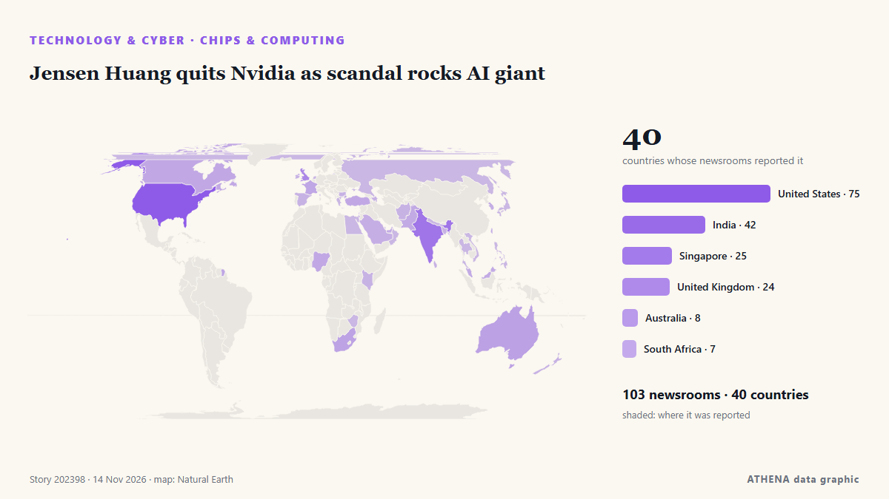

Jensen Huang quits Nvidia as scandal rocks AI giant

Jensen Huang, the leather-jacketed architect of the artificial intelligence boom, resigned as chief executive of Nvidia on Thursday after revelations of two extramarital affairs, including one with a… from Africanews (English)
What changed 8 new reports from 5 outlets in the last 24 hours.
See the sources ›Evidence: Strong
Reported independently by 103 outlets in 40 countries since 9 Nov, first by CBC News (alternative feed); coverage is quiet now. ATHENA rates the risk elevated (4.4/10), driven mainly by the severity of the harm described and its geographic and sector reach. Confidence is 86% (high), with 103 independent outlets corroborating it and an average source reliability of 73%. Outlets by country: United States (10), Singapore (6), India (4). Coverage: 9 Nov to 13 Nov, 91 hours.
What changed: 8 new reports from 5 outlets in the 24 hours to 14 Nov.
First reported as: Taiwan chipmaker CEO warns memory price rises are unsustainable
AutomatedSelected, grouped and scored by ATHENA's published method from 29 independent outlets. The headline is the outlet's own; ATHENA's sentences follow fixed patterns - no generative AI writes them. How it works →
How to read this page
- What you are reading
- 103 outlets in 40 countries reported this event. The reports below are listed in the order they appeared; each headline opens the original article. ATHENA writes none of the reports.
- Our reading
- For the record — The reports describe a completed, domestic, commercial or personal matter. We list it so you can see who reported it and when. We are not tracking a risk of wider conflict here.
- How much evidence
- Strong Many independent outlets in many countries describe the same event.
After repeats, off-topic items and stale reports are removed, 26 of the 39 listed reports are counted; 92% of the headlines match the event.
About 27% of the headlines are analysis or opinion rather than straight reporting.
- What this does not mean
- ATHENA measures how an event is reported, not whether it is true. This is not a forecast, a judgement on who is right, or advice.
- What would change it
- Reports from other independent outlets showing a different development, or a firm confirmation or denial from an official source.
Reading R2 · refreshed with every update of this page. ATHENA has not yet published a track record for these readings; when it does, it will be linked here.
At a glance
Selected, scored and written by ATHENA's published methodology. No editor intervenes in individual events. How this is produced ›
| 09 Nov 13:48 UTC | 2 |
|---|---|
| 09 Nov 19:48 UTC | 0 |
| 10 Nov 01:48 UTC | 0 |
| 10 Nov 07:48 UTC | 0 |
| 10 Nov 13:48 UTC | 1 |
| 10 Nov 19:48 UTC | 0 |
| 11 Nov 01:48 UTC | 4 |
| 11 Nov 07:48 UTC | 3 |
| 11 Nov 13:48 UTC | 7 |
| 11 Nov 19:48 UTC | 15 |
| 12 Nov 01:48 UTC | 33 |
| 12 Nov 07:48 UTC | 56 |
| 12 Nov 13:48 UTC | 108 |
| 12 Nov 19:48 UTC | 21 |
| 13 Nov 01:48 UTC | 7 |
| 13 Nov 07:48 UTC | 8 |
| 13 Nov 13:48 UTC | 4 |
| 13 Nov 19:48 UTC | 0 |
| 14 Nov 01:48 UTC | 0 |
| 14 Nov 07:48 UTC | 3 |
| 12 Nov 08:05 UTC | 4.6 |
|---|---|
| 12 Nov 09:17 UTC | 5.4 |
| 12 Nov 09:27 UTC | 4.3 |
| 12 Nov 09:35 UTC | 5.4 |
| 12 Nov 09:56 UTC | 4.0 |
| 12 Nov 15:06 UTC | 4.8 |
| 12 Nov 15:15 UTC | 3.9 |
| 12 Nov 15:44 UTC | 4.9 |
| 14 Nov 13:00 UTC | 4.4 |
Why these numbers
Importance
How widely and how prominently the story is reported.
Risk
What the reports describe, scored for possible harm. It is not a forecast.
Confidence
How well independent outlets support the story.
The reporting — who reported it, and when
headline as published · opens the original- CBC News (alternative feed) · CanadaNvidia CEO's resignation after affair with suspected Chinese spy rattles markets, tech world
- CBC News (alternative feed) · CanadaWhat the Jensen Huang scandal means for Trump and his administration
- CNBC World · United StatesOur Nvidia downgrade — plus, Cramer is looking to add to this position
- The Jerusalem Post · IsraelTrump received intelligence about Nvidia CEO Chinese spy incident ahead of trip to Beijing - report
- Lowy Institute — The Interpreter · AustraliaJensen Huang’s affair exposes Silicon Valley’s national security power
- Indian Express · IndiaHow Jenseng Huang, now facing Chinese spy probe, pushed NVIDIA into a succession crisis
- Responsible Statecraft · United StatesTech CEOs circle wagons around Huang despite China spy claims
- Moneyweb · South AfricaNvidia’s bull case hinges on CEO Huang surviving China spy probe
- Cointelegraph · United StatesCoreWeave stock jumps 15% premarket after Q3 revenue beats estimates
- Moneyweb · South AfricaNvidia gets rare downgrade as Baird raises CEO uncertainities
- Fast Company · United StatesNvidia stock gets its first boost of the Jensen Huang scandal era. What’s driving shares higher today?
- The National · United Arab EmiratesNvidia handed downgrade on Jensen Huang and AI uncertainty
- The Independent · United KingdomThe history of ‘sexpionage’ after Nvidia CEO's affair with suspected Chinese spy
- TechCrunch · United StatesIs Jensen Huang’s bad behavior more commonplace than it seems?
- New York Times Business · United StatesSilicon Valley Tech Allies Support Jensen Huang
- CNBC World · United StatesPeterson: Nvidia’s leadership crisis tests the chipmaker’s role as the ‘central bank of AI’
- Free Malaysia Today · MalaysiaTech bounce lifts global stocks as dollar gains
- CNA (Channel NewsAsia) · SingaporeTech bounce lifts global stocks as dollar gains
- NDTV · IndiaTrump Official Lutnick Stalled Crackdown On Nvidia Chip Diversions To China: Report
- investingLive (ForexLive) · INTLutnick stalls Trump’s third Nvidia chip diversion crackdown this year, Axios says
- Decrypt · United StatesNvidia-Backed CoreWeave Is Surging: Here’s What It Means for the AI Boom
- The Business Times · SingaporeLutnick stalled Trump crackdown on diversion of Nvidia chips to China: report
- Sky News (World) · United KingdomNvidia preparing to oust CEO amid reports of a second affair
- The Business Times · SingaporeNvidia prepares to oust Jensen Huang after news of second affair, with executive: reports
- The Straits Times · SingaporeTech allies rally behind Jensen Huang, calling him vital in AI race
- DigiTimes Asia · TaiwanNvidia board meets on Jensen Huang's future as succession gap comes into focus
- The Business Times · SingaporeWho could replace Jensen Huang? Nvidia’s top engineer and CFO tipped as CEO candidates
- Le Monde (English) · FranceNvidia CEO faces allegations of second affair with employee after ties to Chinese woman suspected of espionage
- investingLive (ForexLive) · INTGoogle TPUs could gain share from Nvidia turmoil, Bloomberg Intelligence says, eyeing $50B
- Al Jazeera English · QatarWhat could Chinese intelligence have learned from Nvidia CEO’s affair?
- Capital FM Kenya · KenyaNvidia’s shares plunge as US tech giant’s board reportedly weighs ousting CEO Jensen Huang
- The Business Times · SingaporeAlleged Chinese spy at centre of Nvidia firestorm is in Beijing
- Times of India · IndiaDid China use a 'honeypot' to influence Nvidia CEO? US Congress wants answers
- Fortune · United StatesHow Megaspeed built a network in Singapore and Malaysia to move $7.5 billion of Nvidia chips to Chinese companies
- Guardian Business · United KingdomThe (alleged) spy who loved me: the Nvidia scandal - podcast
- Times of India · India'Elon, please hire Jensen': Musk responds to X user's request on Nvidia CEO
- CNBC World · United StatesElon Musk says it would be an 'honor' to hire Nvidia's Jensen Huang
- DigiTimes Asia · TaiwanNvidia spy case puts Jensen Huang's family in spotlight amid lack of succession plan
- Africanews (English) · AFRJensen Huang quits Nvidia as scandal rocks AI giant